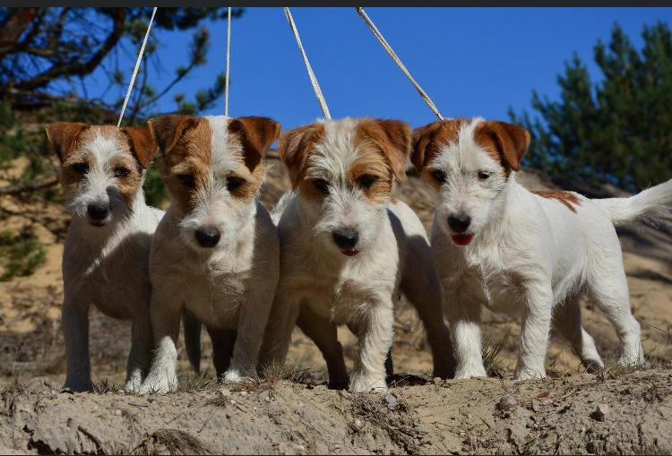

Nasze obecne psy
Jack Russell Terrier
Jacki towarzyszą Balao od ponad dwudziestu lat. Nasza linia wyrosła z importowanych championów — psów takich jak For Pleasure of the Hunters Pride (Champion Polski) czy Eye Catcher Glen vd Ansjoros (Holandia).

Psy
Nasze reproduktory — psy z championskimi rodowodami, badane i wystawiane. Silne, zdrowe, o znakomitym charakterze.

Suki
Serce hodowli. Nasze suki łączą rodowodową jakość z cudownym, rodzinnym temperamentem — to po nich szczenięta dziedziczą charakter.

Szczenięta
Rodzą się i wychowują w domu, wśród ludzi i zwierząt. Do nowych domów wyjeżdżają zaszczepione, odrobaczone, z metryką ZKwP.